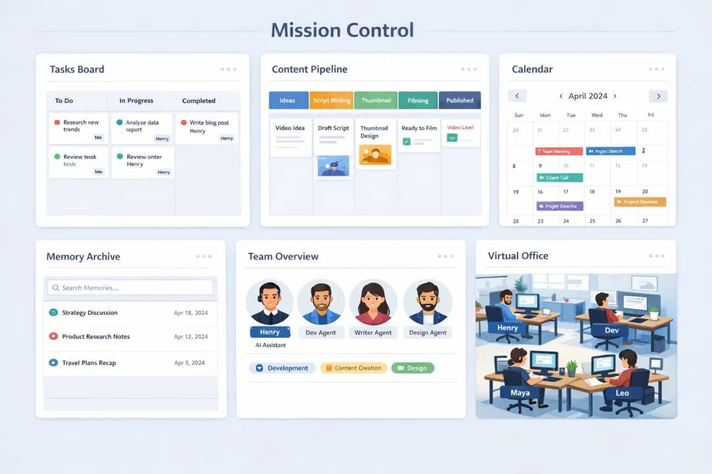

先搭一套「Mission Control」，看了一个博主分享、使用后效率立马提升十倍！Mission Control 本质是一套由 OpenClaw 自己长出来的专属控制台：
你能在同一个地方追踪它在做什么、把你的流程工具化、把记忆从藏在文件里升级为可检索的系统。越用越贴合你的工作流，而且不需要你手写代码、让 OpenClaw 生成即可。建议技术栈直接定死：Next.js + Convex（你在最开始就明确告诉它）！
//
1) Tasks Board｜任务看板（让它开始“主动做事”）
用途：你和 OpenClaw 的工作都透明化，谁在做什么、做到哪一步、卡在哪里一眼看清；它也能看见你在忙什么，从而主动接走任务并更新状态。
指令（直接复制给 OpenClaw）：
Please build a task board for us that tracks all the tasks we are working on. I should be able to see the status of every task and who the task is assigned to, me or you. Moving forward please put all tasks you work on into this board and update it in real time. Build it as a Next.js app with a Convex database.
2) Content Pipeline｜内容流水线（把“分发”做成系统）
用途：把内容创作拆成流水线：Idea → Script → Thumbnail → Filming → Publish。你丢灵感，它每天固定时间把脚本写好、生成缩略图、把卡片推进到下一列，减少你“重复启动”的成本。
指令：
Please build me a content pipeline tool. I want it to have every stage of content creation in it. I should be able to edit ideas and put full scripts in it and attach images if need be. I want you to manage this pipeline with me and add wherever you can. Build it as a Next.js app with a Convex database.
3) Calendar｜日历（验证它有没有真的排程）
用途：很多人觉得 Claw 不够主动，实际问题常常是“没有可见的排程”。日历就是你对它的 cron jobs / scheduled tasks 的审计面板：有没有排进来、什么时候跑、是否执行成功。
指令：
Please build a calendar for us in the mission control. All your scheduled tasks and cron jobs should live here. Anytime I have you schedule a task, put it in the calendar so I can ensure you are doing them correctly.
Build it as a Next.js app with a Convex database.
4) Memory｜记忆库（把记忆变成可搜索资产）
用途：把它产生的每一条 memory 变成 UI 里的文档集合，并且做全局搜索。你不再靠想起来去翻文件，而是像查资料一样检索你们过去的决定、偏好、策略、上下文。
指令：
Please build a memory screen in our mission control. It should list all your memories in beautiful documents. We should also have a search component so I can quickly search through all our memories.
Build it as a Next.js app with a Convex database.
5) Team｜团队结构（把 OpenClaw 当成公司在运营）
用途：你会反复用到开发 / 写作 / 设计 / 研究等不同能力，Team 页面把这些常用 sub-agents 固化成组织结构：角色、职责、正在做的事、对应的记忆与工具，方便管理，也能让它对“该叫谁出来做事”更确定。
指令：
Please build me a team structure screen. It should show you, plus all the subagents you regularly spin up to do work. If you haven’t thought about which sub agents you spin up, please create them and organize them by roles and responsibilities. This should be developers, writers, and designers as examples.
Build it as a Next.js app with a Convex database.
6) Office｜数字办公室（偏氛围，但能提升运营感）
用途：更像一个实时状态总览 + 组织效率仪表板。用头像/工位展示每个 agent 的当前状态与任务进度；谁空闲、谁卡住、谁在跑流程，一眼可见，也更有在带团队的感觉。
指令：
Please build me a digital office screen where I can view each agent working. They should be represented by individual avatars and have their own work areas and computers. When they are working they should be at their computer. I should be able to quickly view the status of every team member.
Build it as a Next.js app with a Convex database.
建议：先把 Tasks Board + Calendar + Memory 做出来，你会立刻感觉到它从对话助手变成可运营的系统。后面再按你的工作流一点点加组件，Mission Control 会越用越像你自己的 AI 控制台。